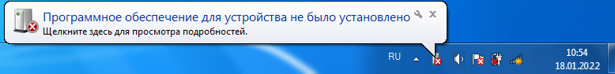
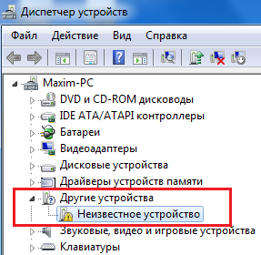
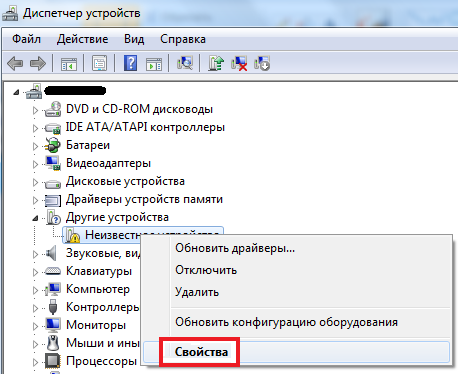
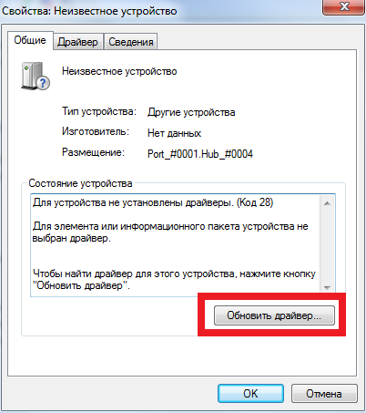
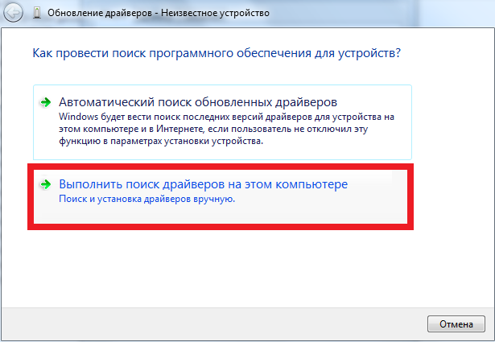
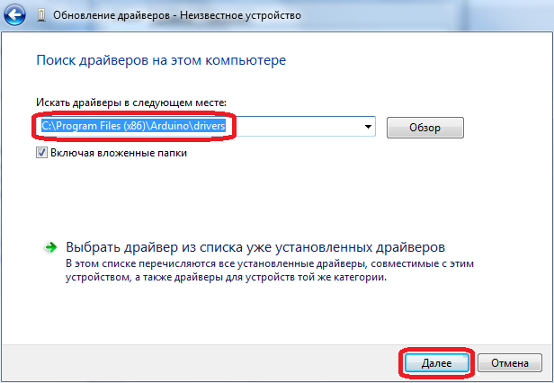
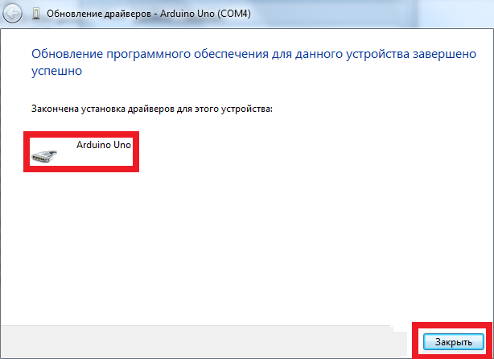
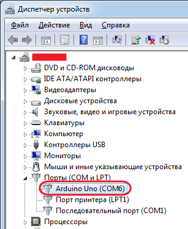

Установка драйвера для Arduino Uno
Автоматическая установка
Подключите плату Arduino к компьютеру. Если компьютер подключён к сети Internet, скорее всего, необходимые драйвера установятся автоматически. Если этого не произошло, то необходимо вручную установить драйвера.
Ручная установка
Если драйвера не установились в автоматическом режиме, то Windows выдаст об этом сообщение (рис. 1).

Для устранения проблемы откройте оснастку «Диспетчер устройств».
- В разделе «Другие устройства» будет «Неизвестное устройство» (рис. 2). Это, скорее всего, плата Arduino Uno.

Рис. 2 - Неизвестное устройство в Диспетчере устройств - Щелкните правой кнопкой мыши на пункте «Неизвестное устройство» и откройте «Свойства» (рис. 3).

Рис. 3 - Открытие свойств неизвестного устройства в Диспетчере устройств - Щелкните на кнопке «Обновить драйвер» в окне свойств неизвестного устройства (рис. 4).

Рис. 4 - Окно свойств неизвестного устройства в Диспетчере устройств - В открывшемся окне щелкните на «Выполнить поиск драйверов на этом компьютере»(рис. 5).

Рис. 5 - Окно поиска драйверов - Укажите папку «drivers», которая расположена в папке с установленнной Arduino IDE, и щелкните на кнопке «Далее». Флажок «Включая вложенные папки» должен быть установлен (рис. 6).

Рис. 6 - Указание местоположения драйверов - Через некоторое время драйвера установятся и система выдаст сообщение об этом (рис. 7). щелкните на кнопке «Закрыть». Теперь можно работать с Arduino Uno.

Рис. 7 - Cообщение об окончании установки драйверов - В Диспетчере устройств в разделе «Порты (COP и LPT)» появится плата Arduino Uno (рис. 8).

Рис. 8 - Плата Arduino Uno опознана в Диспетчере устройств
Будьте внимательны при работе с платой Arduino! Снизу платы есть оголённые проводники, и если Вы положите плату на токопроводящую поверхность, есть вероятность сжечь плату. Также не трогайте плату влажными или мокрыми руками и избегайте при работе сырых помещений.
Источники
soltau.ru - Как начать программировать Arduino
arduino.ru - Начало работы с Arduino в Windows
robohobby.by - Урок 1. Установка драйверов для модулей Arduino